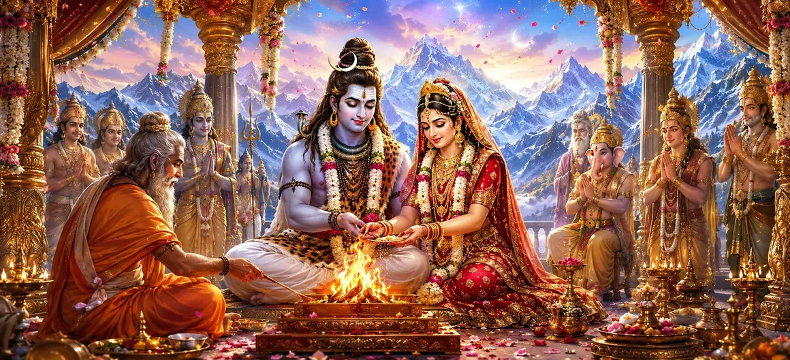

With the arrival of the divine bridegroom complete, the long-awaited wedding ceremony was ready to begin. Gods, sages, celestial beings, and holy attendants gathered around the sacred pavilion to witness the union of Lord Shiva and Goddess Pārvatī. The atmosphere was filled with devotion, auspiciousness, and spiritual radiance.
A magnificent wedding pavilion had been prepared according to sacred traditions. Decorated with flowers, precious ornaments, and auspicious symbols, it shone brilliantly. The sacred fire was established at the center, symbolizing purity and divine witness.
Brahmā, Viṣṇu, Indra, and countless celestial beings took their places around the sacred gathering. They watched with joy and reverence, understanding that this divine marriage would shape the destiny of the universe.
Adorned with divine ornaments and surrounded by companions, Goddess Pārvatī entered the sacred pavilion. Her beauty illuminated the surroundings, and all present praised her grace, purity, and devotion.
For the first time during the ceremony, Lord Shiva and Goddess Pārvatī were seated together according to sacred custom. Their presence radiated peace and divine energy, filling the assembly with joy and wonder.
The assembled priests and sages began chanting sacred Vedic mantras. Offerings were made into the holy fire, and the marriage rites commenced according to ancient spiritual tradition. Every mantra echoed through the heavens with divine significance.
Every Vedic rite performed during the wedding carried profound spiritual significance.
The marriage symbolized the eternal union of Shiva and Shakti.
The sacred ceremony restored balance and auspiciousness throughout creation.
As the ceremony concluded, divine blessings flowed upon the assembled gods, sages, and celestial beings. The sacred atmosphere filled every heart with joy, peace, and devotion.
The Sacred Wedding Ceremony reminds devotees that every spiritual union is strengthened through faith, purity, dedication, and divine grace. When actions are performed according to dharma, they become offerings to the Divine.
The gods rejoiced upon witnessing the completion of the sacred rites. They understood that the long-awaited union of Shiva and Pārvatī would soon lead to the fulfillment of many divine purposes.
Although the sacred ceremony had been performed, many joyous celebrations still remained. The next stage would further glorify the divine marriage before all the worlds.
"When sacred vows are united with divine grace, every ceremony becomes eternal."
The sacred wedding rituals have now been completed according to the eternal Vedic traditions. As divine blessings fill the universe, the glorious marriage of Shiva and Pārvatī reaches its most celebrated moment. Continue to the next chapter to witness the divine marriage itself and the joy it brings to gods, sages, and all creation.